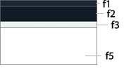

1 Colors
To do
1.1 Backgrounds
Here we will talk about the meaning of the colors used, how to use them and so on.

f1: #222b37 (Top area)
f2: #1a212b (Header area)
f3: #eff2f3 (Submenu area)
f4: #e1e4e5 (Submenu area with -5 luminosity value)
f5: #fff (Main content area)
1.2 Accent
The main accent color is c1: #37b5e4, the stratio logo color. Accent colors should be used sparingly, mainly for buttons, links and elements of the header, menus and footer.
c1: #37b5e4
c1b: #2d96bd
c2: #b7bfc3
c2b: #92989c
c3: #485566
c3b: #2d3540
c4: #222b37
c5: #d3d8db
1.3 Neutral
This color palette provides a neutral backdrop. These colors are used largely for text and content blocks. When alternating between tones, be sure to use enough contrast between adjacent colors.
g0: #fff
g1: #fbfbfb
g2: #f3f3f3
g3: #e4e4e4
g4: #cbcbcb
g5: #b5b5b5
g6: #999
g7: #777
g8: #555
g9: #242424
g10: #000
1.4 Status
This colors and their variants are used in order to express status: green for "OK", orange for "Some issues" and red for "Error".
e1: #93ae65
e1b: #7d9456
e1c: #9fad87
e2: #eb8817
e2b: #d17915
e2c: #eb9e46
e3: #d24234
e3b: #b8392e
e3c: #d15549
1.5 Other
To do
a1: #d0c120
a2: #21d8de
a3: #bcea3f